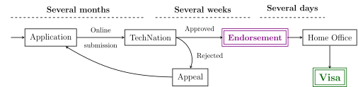

A few days ago I received a Global Talent UK visa as an Exception Talent in the field of Digital Technology. This would make a great #humblebrag post, but with everything happening now in Tech (and in the world, really), I want to help raise awareness about the Global Talent visa scheme and share some quick notes about my experience that some of you may find useful.
Disclaimer: below is my personal experience with the Global Talent visa application process. This is not a legal advice! Double-check with real lawyers when in doubt.
First, it’s worth noting that when I applied for a Global Talent, I was already a resident in the UK and employed there. This made certain things easier, but for the most part didn’t make a huge difference on the overall application process.
Tier 2 vs Global Talent
I came to the UK in 2019 as a Software Engineer on a Tier 2 (General) visa. This is the most popular and probably the most accessible route. You only find an employer willing to sponsor your visa, and that’s it.
In essence, the Tier 2 (General) visa scheme entails the following:
- Your visa status is linked to your employer and continued employment.
- You and your dependants are granted visas for a period of 5 years.
- After 5 years of continuous stay in the UK, you may apply for Indefinite Leave to Remain (ILR).
- If you become unemployed, you have 60 days to find a new job.
In contrast, the Global Talent visa scheme gives you more freedom and flexibility: you can work for any employer, be self-employed, or run your own business. There are still some restrictions but roughly you can do pretty much whatever your want.
There are two categories of the Global Talent visa:
- Exceptional Talent for those with established careers,
- Exceptional Promise for people at an earlier stage in their professional journey.
Practical differences between the two categories are:
- You only need to spend 3 years on an Exceptional Talent visa before you can apply for ILR and full 5 years on a Promise. Note that the time spent on a Tier 2 visa also counts! In my case, I’ve already spent over 3 years on a Tier 2 visa and can apply for ILR right away.
- It might be easier to secure an Exceptional Promise visa. This makes it an enticing option when you either don’t need an accelerated path to ILR or don’t have enough evidence to support the Talent category. You will still have extra piece of mind and flexibility compared to the Tier 2 scheme.
At the time, I didn’t research any other visa schemes and assumed that Tier 2 (General) is the best you can get unless you’re a founder of a startup or an investor. I learned about the Global Talent visa scheme only in 2022, when it became more of a priority for obvious reasons. Ultimately, I received an endorsement as an Exception Talent and this is what I’ll be focusing on.
Note that the rules for dependants are slightly different on the Global Talent compared to the Tier 2:
- The 3 year requirements and hence an accelerated path to ILR applies only to the main visa holder. Dependants still need to have continuously lived in the UK for 5 years before they can apply for ILR.
- Usually, an Exceptional Talent visa is granted for a period of 3 years, so make sure to double check what an arrangement for your dependants will look like.
- When you’re switching from the Tier 2 to the Global Talent, dependants can keep their existing 5-year visas.
Application process
When it comes to the application process, TechNation has a very detailed and comprehensive guide.

Things to note:
- The most important part is to get an endorsement. Getting a visa after that is a technicality.
- You need a personal statement, 3 letters of recommendation, and up to 10 supporting documents for the application. They should serve as evidence that you are a leader in your respective area. The endorsing organisation will decide whether or not to endorse you based only on these documents.
- Everything is done online. The only part where you actually need to physically go somewhere and do something is only after you have received the endorsement.
In terms of the timeline:
- Preparing the application package took me several months. I know people who had successful applications with less than 2 months of preparation.
- Review of the application by TechNation was very quick. Formally, however, it can take up to 8 weeks so plan accordingly.
- Processing by the Home Office took days. I had a priority service and would recommend it despite the additional cost.
NOTE: TechNation will cease operations on March 31.
Undoubtedly, a new organisation will take over endorsing Global Talent visas, but it’s not clear who that will be yet. In my opinion, the existing requirements will likely remain the same, and you could use existing guidelines to prepare your application.
When working on the application, I received legal/consulting support, which I found helpful,
especially in highlighting important details and making the application standout. However, you
can’t shouldn’t expect to just outsource your application to a third-party. My application was
my own work, and I believe that it’s fully possible to prepare an excellent Global Talent
application on your own.
Putting together an application
When I started preparing my application, it felt a bit overwhelming. I had a rough idea that I want to anchor the application in my work on static code analysis and compilers, but building a good cohesive narrative took many iterations.
First thing I did, I made a spreadsheet and started adding everything1 relevant there:
- Professional accomplishments,
- Contributions to OSS (outside of work),
- Speaking at conferences,
- Public testimonials,
- Teaching and education,
- Academic background,
- etc…
It’s all too easy to discard certain accomplishments as one-offs. But when you have everything on a single page, things start magically fall into a larger narrative, which is great because TechNation wants to see consistency over a period of time2.
I grouped the items into buckets and mapped them to eligibility criteria. Later, when submitting the application online, you’ll need to specify for each piece of evidence what eligibility criterion it corresponds to. For me the criteria were:
- (mandatory) show that the applicant have been recognised as a leading talent in the digital technology sector in the last 5 years
- (optional) proof of recognition for work beyond the applicant’s occupation that contributes to the advancement of the field
- (optional) significant technical contributions to the field as a founder, employee of a product-led digital technology company.
Then I started writing my personal statement. Personal statement is where you iterate on your story and, ultimately, this is your own sales pitch. Several things to note here:
- Starting with a blank page is hard. It took me a while to get over the initial block and write at least a couple sentences. Although, I can imagine that now chatGPT can help with that.
- This is not the time to be modest. You have to prove that you are a leading talent. Be bold and use the right vocabulary.
- Be honest. Presenting things in a favourable light is OK, making things up and over-exaggerating is no bueno.
Recommendation letters are very important because they are the main evidence supporting your mandatory eligibility criteria. Finding referees and asking them to provide a recommendation may feel awkward, but people are nice and usually willing to help. My referees were awesome and I am grateful for their support.
Preparing 10 pieces of evidence was probably the easiest part. The only thing to note here is that you should make each document self-sufficient. This means:
- Links should be used sparingly. The reviewer is not required to follow the links, so it’s better to include information directly in the document to make sure the reviewer sees it.
- Screenshots are good. Each document can be up to 3 pages long which is enough space to include screenshots of any public testimonials, lists of commits, number of stars on your open-source project, etc.
- Context is good. Explain what the reviewer sees and why it’s significant. The reviewer may not be a specialist in your particular area, so help them help you.
Finally, the key component to a successful application is to keep pressing on. There are many things that are much more interesting and fun than working on a Global Talent visa application. It’s all too easy to put off working on your personal statement or other required documents, especially when there isn’t a clear deadline in sight. I think I made the most progress on my application when I committed to spending at least 30 minutes every day working on it3.
Closing thoughts
I spent a lot of time and energy preparing my Global Talent application. In retrospect, I may have put in too much effort. I could’ve submitted my application a couple months earlier if I hadn’t waited for my Meta engineering post to be published and spent less time polishing my supporting documents.
However, now that I have my Global Talent visa, I don’t regret the time and effort I put into the process. The peace of mind it brings me is worth it.
As a rule, your evidence should be from the past 5 years, though there may be exceptions such as your academic background.↩︎
This means that starting something new specifically for the application won’t work. Better focus on things you’ve already been doing for some time.↩︎
This is not rocket science; rather it’s pretty down to earth time management.↩︎